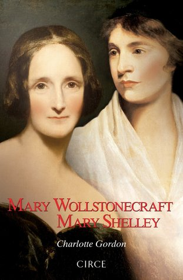

Mary Wollstonecraft, Mary Shelley
Reseña por Jorge I. Zuluaga

Ver detalles · Ver reseña en GoodReads (necesita cuenta)
Tal vez no sea muy correcto comenzar esta reseña hablando de jíbaros y placeres mundanos, pero es que no encuentro mejor manera de describir cómo llegó esta excepcional biografía de Charlotte Gordon a nuestra biblioteca. Fue nuestro jíbaro literario, Wilson Mendoza, de librería Grammata en Medellín, quien trajo este tesoro a nuestra ciudad y nos permitió conocerlo porque sabía que nos encantaría. No se equivocó. Esta es posiblemente la mejor biografía que he leído en mi vida. Ahí están las bondades de un buen jíbaro literario.
Aunque el libro reposaba en nuestra biblioteca (hablo en plural porque comparto con mi esposa y compañera lectora, Olga Penagos, la pasión por coleccionar y leer libros como este) desde hacía muchos meses, decidí al fin meterle el diente —es un libro de más de 500 páginas y requiere vencer cierta resistencia— con motivo del estreno de la adaptación del director mexicano Guillermo del Toro de la novela Frankenstein , obra de la gran Mary Godwin-Shelley (o Mary Shelley, como se la conoce comúnmente), uno de los personajes protagonistas de esta fantástica biografía.
Aunque esperaba encontrarme con una biografía interesante sobre dos de los personajes femeninos más grandes de la literatura y la filosofía del Romanticismo y la Ilustración, lo que no sabía era que esta no era una biografía convencional.
En primer lugar, lo obvio: como se adivina por su nombre, Mary Wollstonecraft, Mary Shelley es una biografía doble. Aunque no es que sea el que más ha leído biografías, creo que pocos textos de este género han hecho algo así o han logrado lo que consigue Gordon. Aunque es obvio que pocas vidas se han conectado de manera tan profunda como la de estas dos mujeres, madre e hija, la estructura narrativa es demasiado original.
Si esperan encontrarse con biografías sucesivas o con una biografía familiar contada en orden cronológico y en el que el protagonismo se sucede de la madre a la hija, seguro se llevarán la misma sorpresa que me llevé yo desde el principio. Gordon decide alternar los eventos de la vida de la más joven, Mary Godwin-Shelley (la hija), entre los eventos de la vida de su madre, la escritora, filósofa, política y pionera del feminismo, Mary Wollstonecraft.
Esta estructura narrativa hace a veces difícil seguir el hilo de las historias de ambos personajes; se hace especialmente confuso recordar los nombres de los personajes relacionados con cada historia, o las fechas de los eventos importantes que se alternan con una diferencia de casi 20 años entre la una y la otra. Sin embargo, las historias alternadas están tan bien escritas, y la vida de estas dos mujeres es tan interesante, que la dificultad se vuelve a la larga superficial. Además, esa estructura ayuda a mantener el interés a lo largo de todo el libro y hace que un texto de un género normalmente difícil de leer, como lo es el biográfico, se vuelva realmente excitante.
Es difícil que resuma en los párrafos de una reseña como esta el contenido de la vida de estas dos mujeres. Seguro la mayoría de quienes se asoman por aquí las conocen por lo menos superficialmente. Mary Wollstonecraft fue una escritora de finales de los 1700 que, después de un origen humilde y muy difícil, logró encontrar un lugar en el mundo editorial subiendo por su talento y por la suerte de contar con amigas y amigos apropiados esa cuesta arriba que enfrentaban todas las mujeres de su época. Con el tiempo y la experiencia, terminó convirtiéndose en una importante figura de la filosofía política y social de la época, una de las más interesantes y convulsas de la edad moderna —Wollstonecraft fue testigo directa de la Revolución Francesa—. Aunque escribió sobre muchos temas, su obra más conocida y controversial fue la famosa Vindicación de los derechos de la mujer , que le valió la fama inmortal de la que todavía goza, y que se convirtió a la larga en uno de los textos fundacionales del feminismo moderno. Por su parte, Mary Godwin-Shelley, su segunda hija y la primera con William Godwin, fue escritora y poeta, autora de un puñado de novelas de las que destaca la que es quizás la más grande novela gótica de la historia, Frankenstein, o el moderno Prometeo . Mary Godwin-Shelley fue inicialmente compañera de aventuras y posteriormente esposa del celebrado poeta británico Percy Shelley, cuya historia por supuesto conocemos en esta biografía. Se movió en los círculos literarios y filosóficos de la época gracias a las redes que heredó de sus distinguidos padres y, por supuesto, las de su esposo.
Hasta ahí lo que podría encontrar uno en una página de Wikipedia —¿perdí el tiempo, entonces, escribiendo ese párrafo? Espero que no—. Como adivinarán, 500 páginas de biografía seguro no son para repetir algunos tropos sobre estas dos mujeres.
Sobre Wollstonecraft descubrimos, en el particular estilo novelado de esta biografía, su traumática infancia, con un padre alcohólico y violento y una madre desordenada y complaciente. Con un puñado de hermanos de los cuales cuidar —lo haría con sus hermanas, prácticamente hasta sus últimos días— y con muy pocas oportunidades para desarrollar el poderoso intelecto con el que nació. Conocemos sus aventuras y la manera como dio el salto al mundo editorial y se convirtió en la pensadora influyente que conocemos. Pero también Gordon nos transporta a su compleja vida emocional, a la traumática relación con su primera pareja, un aventurero con el que tuvo una hija por fuera del matrimonio —hermana mayor de Mary Godwin— y cuyo posterior rechazo la llevó a dos intentos fallidos de suicidio. También conocemos de cerca la peculiar pero, para mí, hermosa relación que tuvo con William Godwin al final de su vida —Wollstonecraft murió con solo 38 años por complicaciones posteriores al parto de Mary—.
Sobre Mary Godwin-Shelley —me resisto a llamarla solo con el apellido de su esposo— conocemos, entre muchas otras cosas, incluyendo las circunstancias en las que creó la inmortal Frankenstein, los impresionantes dramas que vivió: primero para convertirse en la esposa de Shelley —quien era casado cuando la conoció—, pero más difícil aún los dramas como mamá. Eran tiempos en los que sobrevivir a la infancia era difícil, pero los Shelley vivieron además tremendas estrecheces, de modo que la muerte de 3 de los 4 hijos que tuvo Godwin-Shelley es un verdadero desastre. No se entiende, después de leer esta biografía, cómo logró sobreponerse y convertirse a la larga en una mujer madura poseedora de una impresionante riqueza producto de su trabajo y del legado de su esposo.
No puedo sino admirar al triple a Mary Wollstonecraft y a Mary Godwin-Shelley de lo que las admiraba antes; esta biografía de Charlotte Gordon es fascinante y logra convertir sus vidas en un relato novelado que no te suelta.
¡Consigan sus propios jíbaros literarios! ¡No saben de lo que pueden estar perdiéndose!